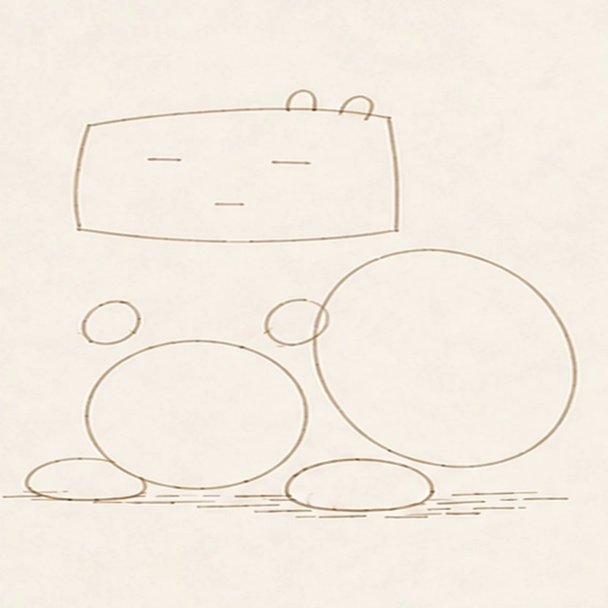
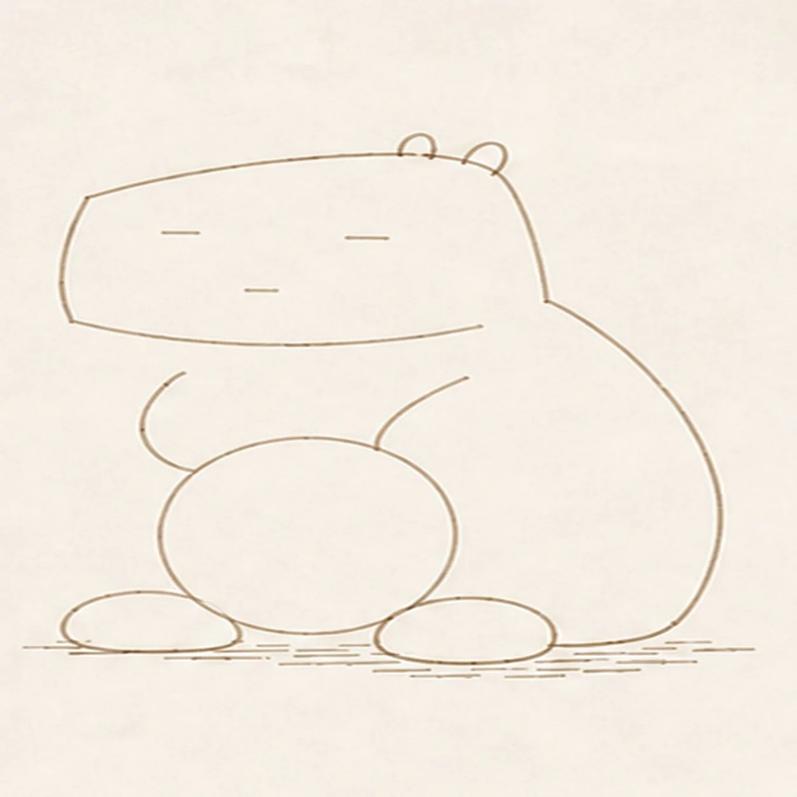
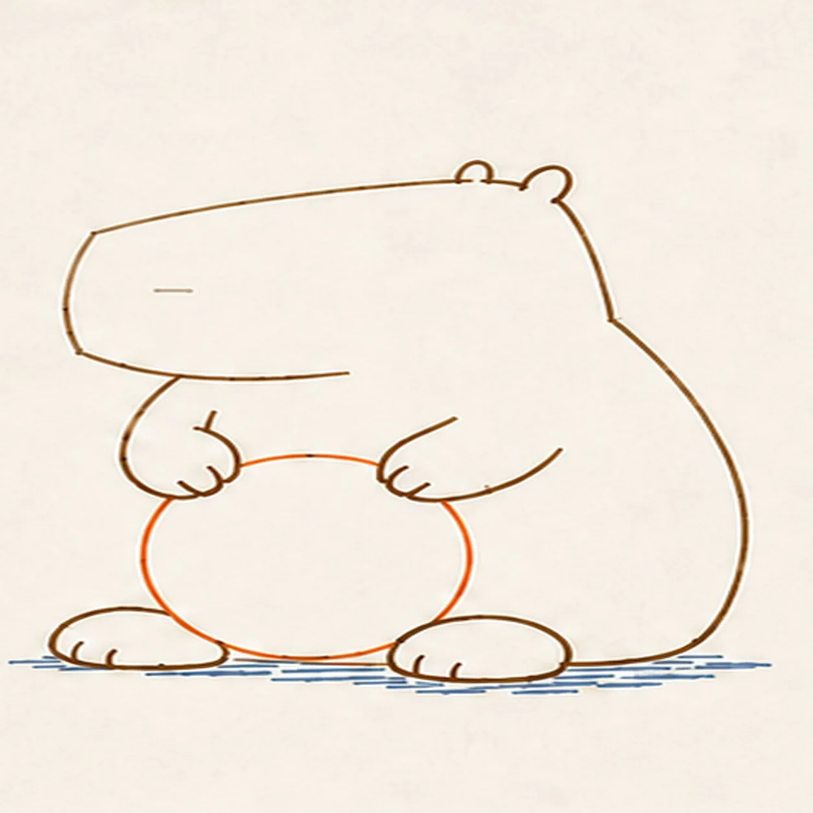
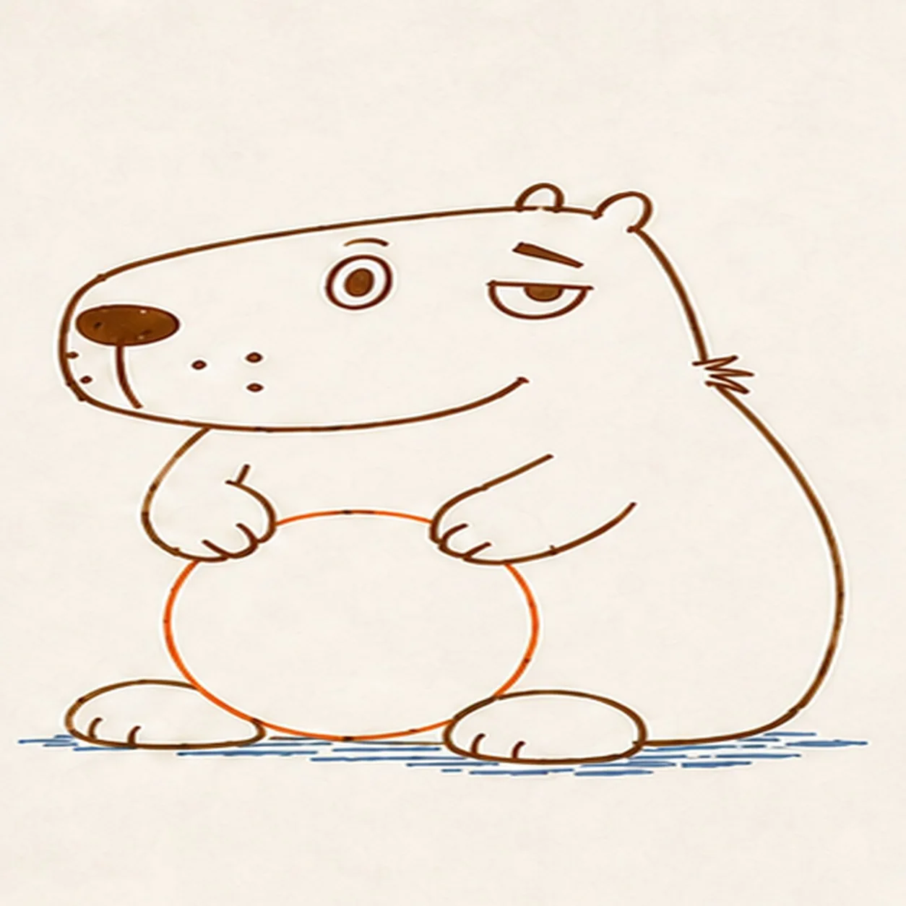
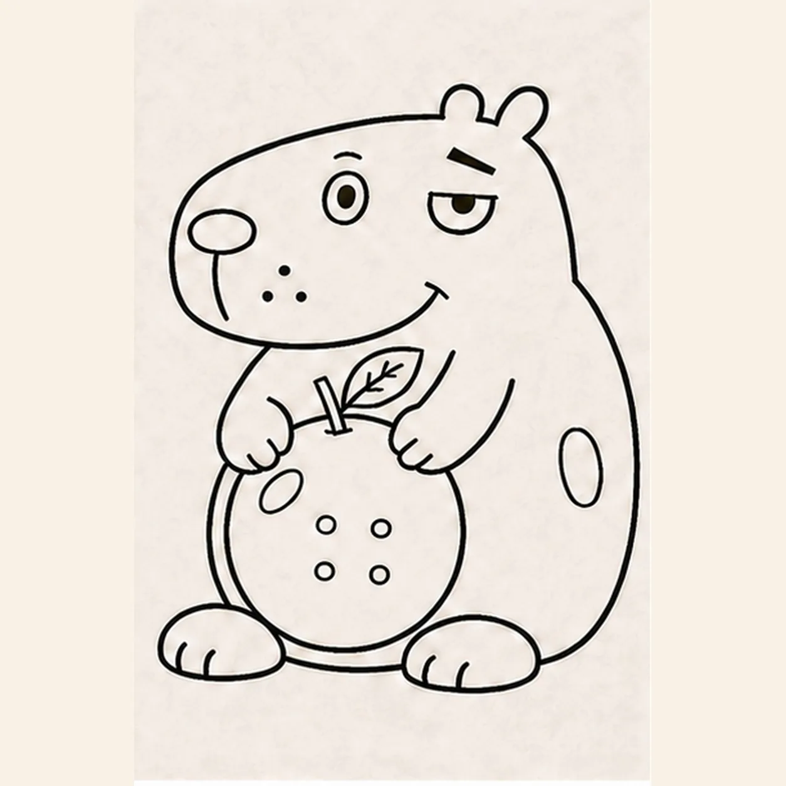

Marker ready?
Let's draw a capybara
Treat this as one playful practice round: sketch the idea loosely, simplify the shapes, then commit with confident marker outlines and bright fills.
-
01

Draw the head and ears
Near the top of your page, draw a long rounded head with a blunt left end. Add two small ear bumps along the upper-right edge. Leave the lower-right side open for the body.
Marker tip: Make the head wider than it is tall. The empty space underneath is where the body will go.
-
02

Add the back and feet
Continue the right edge of the head down into a large curved back. Draw two flat oval feet near the bottom and join them with a short belly curve. Leave the front of the body open for the arms.
Marker tip: Place the feet about one head-height below the chin. The back curve meets the right foot.
-
03

Give it a sideways grin
Draw an oval nose near the left end of the muzzle and a short line below it. Add one wide oval eye, one half-closed eye, a small brow over each, and three cheek dots. Extend the lower head line upward into a smile.
Marker tip: Keep the wide eye on the left and the sleepy eye on the right. These features stay in place for the rest of the drawing.
-
04

Draw the paws and orange
In the open front of the body, draw two short bent arms ending in rounded paws. Add the small finger curves. Draw a large round orange between the paws, stopping its edge behind each paw and leaving a small gap at the top for its stem. Connect the left paw down toward the left foot.
Marker tip: Draw the paws first so the orange fits behind them. Keep the fruit above the belly curve and between the feet.
-
05

Add the leaf and small details
Put a short stem in the gap at the top of the orange, then attach one pointed leaf with a center vein and short side veins. Add four small dimples to the fruit, two toe marks on each foot, and one oval highlight on both the fruit and body.
Marker tip: Leave the two highlight ovals empty when you color. Arrange the four fruit dimples in two rows.
-
06

Color your capybara
Fill the body warm brown, the fruit orange, and the leaf teal. Color the nose and pupils dark, and add coral inside the ears and on the cheek. Leave the eye whites and both highlight ovals uncolored. Follow the curved shapes with short marker strokes.
Marker tip: Let the outlines dry first. Use one coloring pass over the shapes you have already drawn.
![Handmade felt-tip marker drawing of one face-free upright cartoon hourglass with exactly two rounded teal caps, exactly two attached coral side pillars, one pale-aqua pinched glass vessel, one curved upper golden-yellow sand bed, one centered falling sand stream, one rounded lower sand pile, exactly two open-paper glass highlights, exactly three yellow four-point sparkles, exactly four deep-navy cap notches, thick imperfect black outlines, visible directional marker texture, and one broken deep-navy ground shadow](assets/cartoon-hourglass-with-flowing-sand-finished-v1.webp)
![Handmade felt-tip marker drawing of one face-free upright teal cartoon walkie-talkie leaning slightly right with one top-left antenna, exactly two coral top knobs, one attached coral push-to-talk button on the upper-left side, one blank pale-aqua rounded screen with a dark bezel, exactly five horizontal deep-navy speaker slots, exactly two yellow radio-wave arcs above the antenna, exactly two open-paper case highlights, exactly four lower grip ribs arranged two per side, thick imperfect black outlines, visible directional marker texture, and one broken deep-navy ground shadow](assets/cartoon-walkie-talkie-finished-v1.webp)